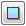
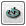
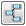

UDN
Search public documentation:
AttachmentsBrowserReferenceKR
English Translation
日本語訳
中国翻译
Interested in the Unreal Engine?
Visit the Unreal Technology site.
Looking for jobs and company info?
Check out the Epic games site.
Questions about support via UDN?
Contact the UDN Staff
日本語訳
中国翻译
Interested in the Unreal Engine?
Visit the Unreal Technology site.
Looking for jobs and company info?
Check out the Epic games site.
Questions about support via UDN?
Contact the UDN Staff
UE3 홈 > 언리얼 에디터와 툴 > 어태치먼트 브라우저 참고서
어태치먼트 브라우저 참고서
문서 변경내역: James Golding 작성. Jeff Wilson 업데이트. 홍성진 번역.
개요
어태치먼트 브라우저 열기
어태치먼트 브라우저 인터페이스

- 툴바
- 작업공간
툴바
| 뷰포트에 선택된 액터와 그 어태치먼트를 전부 작업공간에 추가합니다. | |
|  | 작업공간의 모든 액터를 지웁니다. |
 | 작업공간에 선택된 액터 전부를 마지막 선택된 액터에 붙입니다. |
|  | 작업공간을 새로고치고 어태치먼트 브라우저 외에서 한 어태치먼트 전부를 업데이트합니다. |
|  | 작업공간의 액터와 어태치먼트 전부를 자동으로 정돈하여 베이스 액터는 왼쪽에, 붙은 액터는 그 오른쪽에 깔끔히 정리해 줍니다. |
액터 추가하기
액터 붙이기
 2) 새 베이스로 만들려는 액터를 추가로 선택
2) 새 베이스로 만들려는 액터를 추가로 선택
 3) Alt-B 키를 누르거나, 툴바의 '액터 부착' 버튼 클릭
3) Alt-B 키를 누르거나, 툴바의 '액터 부착' 버튼 클릭